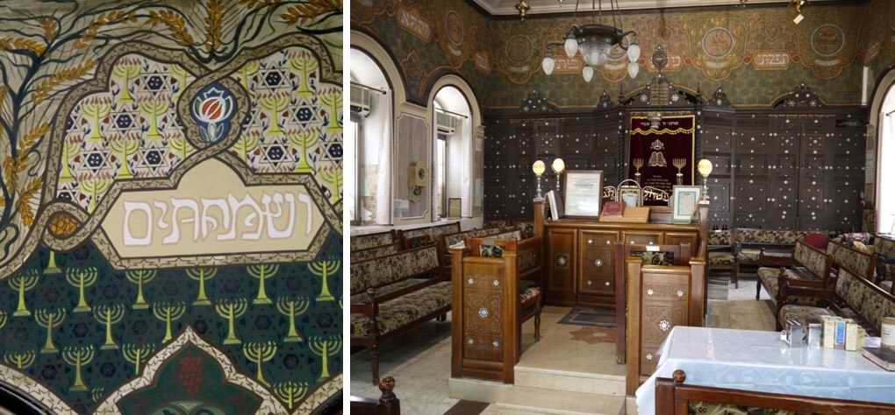

The Beginnings of Zionist Art. The Ades Synagogue
Some twenty years ago, as part of a course at the Hebrew University of Jerusalem on Mount Scopus (Hebrew: Har ha-Tsofim), I attended an off-campus lecture in one of the oldest and most beautiful synagogues of modern times in Jerusalem. Unfortunately, my Hebrew was still taking its first unsteady steps in those days, and so the name of the synagogue, which meant nothing to me then, slipped out of my notes.

Quite recently a blessed thought came to me: to publish a post with a photo (see the photo above). For those who are not familiar with it, this is the old seal (if anything from the very beginning of the last century can be called old) of the Bezalel Academy of Arts in Jerusalem, which, by the way, now stands on that same Mount Scopus, right next to the Hebrew University. The photo shows the Ark of the Covenant, a drawing by Boris Schatz, founder of the Bezalel School of Jewish Art, which to this day is the official seal of the school.
So I published this seal together with a request:
"Brothers and sisters, experts on Jerusalem, help me, bevakasha (please)! I really need it! I need to find out the name of a synagogue. I think it is a Sephardi synagogue in Jerusalem. Its Aron ha-Kodesh (the cabinet where the Torah scrolls are kept) is made of walnut and covered with oriental ornament inlaid with mother-of-pearl and pearls. What matters most to me is that it was painted by one of the students of the Beit Midrash le-Omanut Yehudit "Bezalel". It is one of the first synagogues whose paintings show the emblems of the tribes of Israel."

That same day Alex Blend replied that I meant the synagogue in Nachlaot, not far from Agrippas Street. At one time he used to take people there early in the morning "to have a look".
When, you may ask, is a Jew happy? When he first loses something and then finds it. My joy knew no bounds. At last the synagogue stood before me again.
Read the continuation in the next article.
Author: Ephraim Kalish / Torah-Art
 The Beginnings of Zionist Art. Part III
The Beginnings of Zionist Art. Part III Pesach in Israeli Advertising
Pesach in Israeli Advertising Mark Antokolsky. Christ Before the People. Part I
Mark Antokolsky. Christ Before the People. Part I